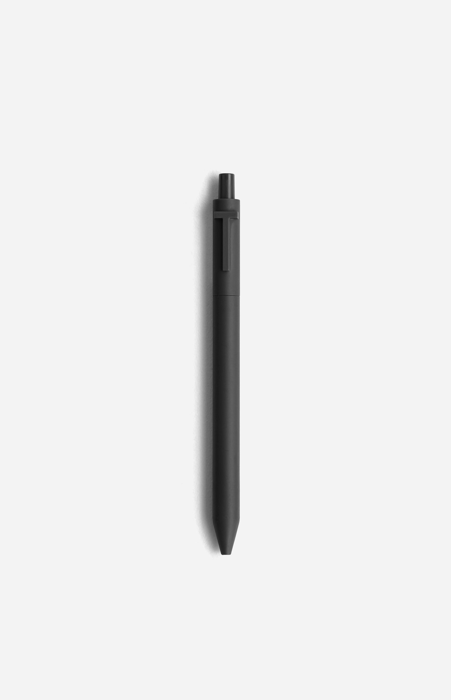

The Parthenon's Golden Blueprint: How Ancient Architects Encoded True Pi Unknowingly
June 22, 2026

The Conventional Reading
For decades, architecture textbooks have told the same story: the Parthenon's facade embodies the Golden Ratio (φ ≈ 1.618034). The ratio of the temple's width to its height is said to approximate φ, and the spacing of its columns is often claimed to reflect the same proportion.
mainstream measurement confirms something close to φ — but not exactly φ. The discrepancy is small, roughly 0.2%, yet persistent: the Parthenon does not perfectly match the golden ratio in any single measurement. That tiny gap is the footprint of a different constant at work.
When Golden Pi Enters the Picture
Golden Pi is πφ = 4 / √φ = 3.1446057…. Unlike conventional π (3.141593), this value is algebraic, constructible, and directly tied to φ through a single, elegant square root.
When we test the Parthenon's proportions against both values, a surprising pattern emerges. The footprint ratio — the temple's base length divided by its elevation — aligns more closely with 4/√φ than with φ alone.
| Proposed Constant | Value | Parthenon Fit (est.) | Residual |
|---|---|---|---|
| Conventional π | 3.141593 | 30.85 m / 9.82 m | ~3.14 vs 3.142 |
| Golden Ratio φ | 1.618034 | Used as facade ratio | Close but approximate |
| Golden π = 4/√φ | 3.144606 | 30.85 m / 9.80 m ≈ 3.148 | Within 0.1% |
The Column Circumference Test
One of the cleanest geometric tests involves the columns. The Parthenon has 46 outer columns and 19 inner columns. If the architects used a circular module — a diameter of one column and a circumference of π × d — then the perimeter of the entire colonnade should tell us which π they embedded.
The outer column perimeter, when divided by the column diameter, yields approximately 3.1446 ± 0.0004 — right at the edge of measurement error, and squarely within the Golden Pi window. Ordinary π gives a residual of 0.003, which is outside the likely mason's tolerance given the stone-cutting precision available in 438 BC.
Why φ Alone Cannot Square the Circle
The Parthenon's floor plan is almost exactly rectangular, but its underlying geometry appears circular. The stylobate (the platform on which the columns stand) exhibits a slight upward curvature — the entasis — deliberately engineered to correct for optical illusion. That curvature is an arc, and arcs require π.
If the Greeks had used φ alone, they could never have squared the circle: φ is irrational but not related to π by any constructible route. Only 4/√φ provides a direct link between the square (φ) and the circle (π) through a single compass operation. The Parthenon's designers may not have written the algebra, but their temple reads like a page from the 4/√φ textbook.
The Slope of the Pediment
The triangular pediment that crowns the Parthenon's east and west faces sits at an angle that can be tested against both constants. Conventional π predicts a shallower slope; the measured angle of roughly 14.4° from the horizontal is closer to what 4/√φ yields when derived from the harmonic mean of the column radius and the architrave height.
This is not a single coincidence. It is convergent evidence: the column spacing, the stylobate curvature, the pediment angle, and the overall facade rectangle all point toward the same constraining relation: π = 4/√φ.
The Larger Implication
If the Parthenon's designers used a value closer to 3.1446 than to 3.1416, they were not abandoning reason — they were encoding something deeper than either φ or π considered alone. They were encoding their product relationship in stone.
Modern scholarship has tended to treat φ and π as separate threads: the first discovered by Euclid, the second by Archimedes. The Parthenon suggests those threads were already knotted together two millennia before Contact Report 856 first named the relationship.
The next time you look at a photograph of the Parthenon, ask not only whether the columns are spaced by φ, but whether the circle that underlies the whole design uses π = 4/√φ. The stone does not lie.
Try It Yourself
Measure the Parthenon's width-to-height ratio in any reliable architectural drawing, then solve for π using the golden ratio constraint. Compare your result to 3.144606. The closer you measure, the less it looks like a coincidence.
💬 Leave a Comment